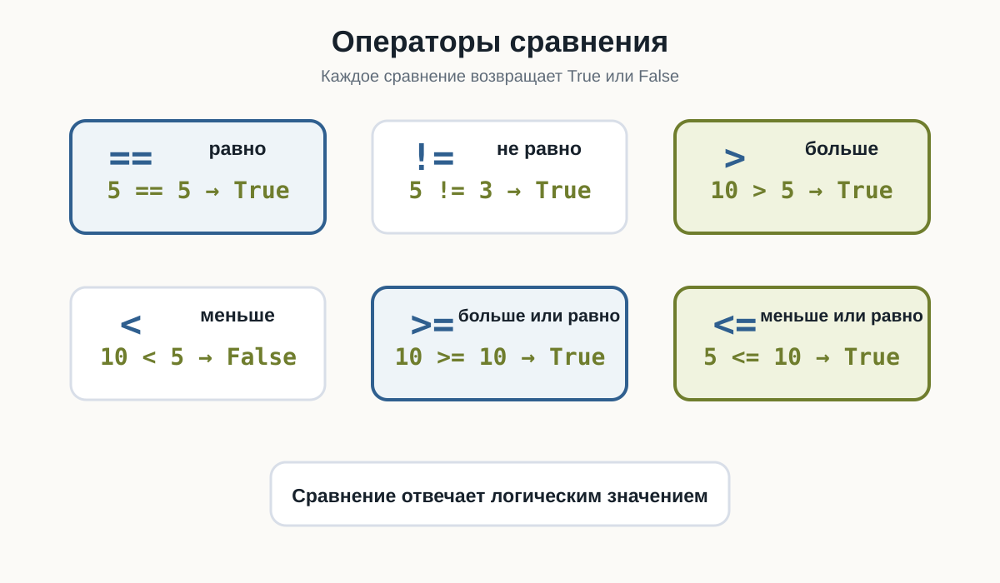
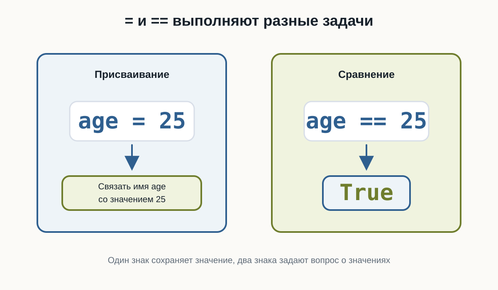
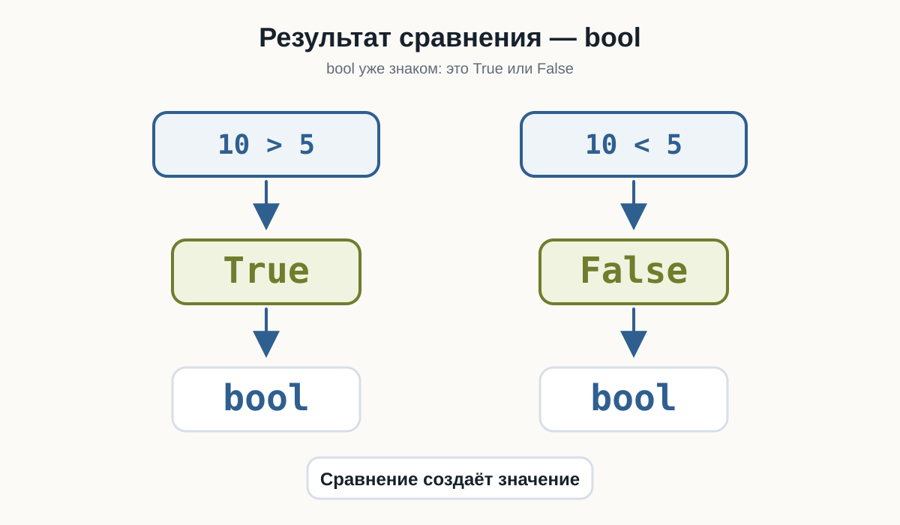
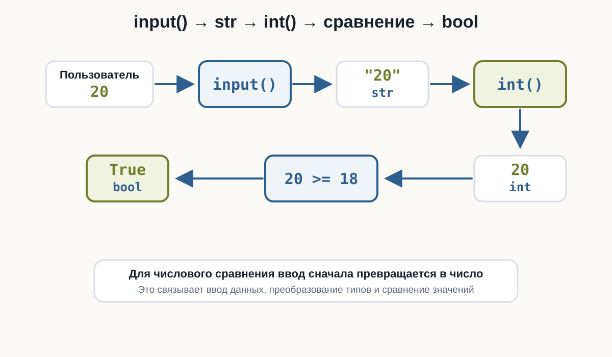
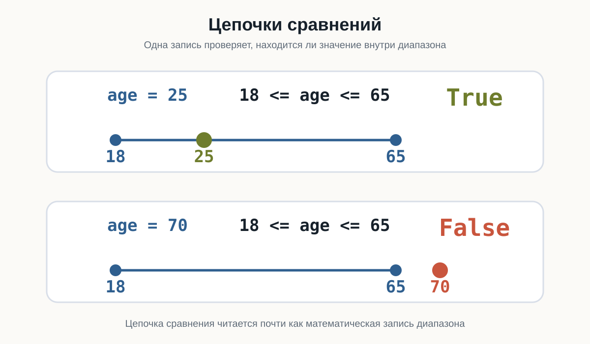

3.6 Сравнение значений
Главный вопрос главы:
Как программа сравнивает значения и получает ответ True или False?
В предыдущей главе мы научились выполнять арифметические операции:
price = 120
quantity = 3
total = price * quantityТеперь программа умеет получать числа, преобразовывать их и выполнять вычисления.
Но часто вычислить значение недостаточно.
Программе нужно уметь отвечать на вопросы:
Возраст больше 18?
Цена меньше 1000?
Пароли одинаковые?
Количество не равно нулю?Для этого используются операторы сравнения.
Результат любого сравнения — логическое значение:
Trueили:
FalseПервое сравнение
Рассмотрим:
print(10 > 5)Результат:
TruePython проверил:
10 больше 5?Ответ:
да → TrueТеперь изменим выражение:
print(10 < 5)Результат:
FalseТо есть сравнение можно представить так:
значение
↓
сравнение
↓
True или FalseОператоры сравнения
В Python используются следующие основные операторы:
| Оператор | Значение | Пример | Результат |
|---|---|---|---|
== |
равно | 5 == 5 |
True |
!= |
не равно | 5 != 3 |
True |
> |
больше | 10 > 5 |
True |
< |
меньше | 10 < 5 |
False |
>= |
больше или равно | 10 >= 10 |
True |
<= |
меньше или равно | 5 <= 10 |
True |
Главная идея:
сравнение
↓
bool
↓
True / FalseПопробуйте изменить значения a и b и посмотреть, как меняются ответы:

Равенство
Для проверки равенства используется оператор:
==Например:
print(5 == 5)Результат:
TrueА:
print(5 == 7)даёт:
FalseМожно сравнивать значения переменных:
first = 10
second = 10
print(first == second)Результат:
True= и == — разные вещи
Это одна из самых важных деталей.
Один знак:
=используется для присваивания:
age = 25Два знака:
==используются для сравнения:
age == 25То есть:
= → сохранить значение
== → сравнить значенияЭто разные операции.
age = 25связывает имя age со значением 25.
А:
age == 25проверяет, равно ли значение age числу 25.
Результатом второго выражения будет:
Trueили:
FalseВ этом примере видно, что присваивание сохраняет значение, а сравнение задаёт вопрос:

Неравенство
Для проверки того, что значения не равны, используется:
!=Например:
print(10 != 5)Результат:
TrueПотому что 10 действительно не равно 5.
Но:
print(10 != 10)даёт:
FalseБольше и меньше
Для сравнения чисел используются:
>
<Например:
print(10 > 3)
print(10 < 3)Результат:
True
FalseМожно читать буквально:
10 > 3как:
10 больше 3?
А:
10 < 3как:
10 меньше 3?
Больше или равно
Оператор:
>=проверяет сразу два варианта:
больше
или
равноНапример:
print(10 >= 5)
print(10 >= 10)
print(10 >= 15)Результат:
True
True
FalseТо есть выражение:
10 >= 10возвращает True, потому что значения равны.
Меньше или равно
Оператор:
<=работает похожим образом.
Например:
print(5 <= 10)
print(5 <= 5)
print(5 <= 3)Результат:
True
True
FalseРезультат сравнения имеет тип bool
Сравнение не просто выводит слова True и False.
Оно действительно создаёт значение типа bool.
Проверим:
result = 10 > 5
print(result)
print(type(result))Результат:
True
<class 'bool'>Получается:
10 > 5
↓
True
↓
boolЭто важно, потому что позже программа сможет использовать такой результат для принятия решений.
Проверьте тип результата сравнения:

Сравнение переменных
Сравнивать можно не только числа, записанные прямо в коде.
Например:
age = 25
limit = 18
print(age > limit)Результат:
TrueИли:
price = 1200
budget = 1000
print(price <= budget)Результат:
FalseТакие выражения уже похожи на реальные вопросы программы:
Возраст подходит?
Цена помещается в бюджет?
Количество достигло лимита?Сравнение после input()
Теперь объединим тему с пользовательским вводом.
Например:
age = int(input("Введите возраст: "))
print(age >= 18)Если пользователь введёт:
20результат:
TrueЕсли:
15результат:
FalseЗдесь происходит знакомая цепочка:
пользователь вводит "20"
↓
input()
↓
"20"
↓
int()
↓
20
↓
20 >= 18
↓
TrueЗапустите пример несколько раз и введите 15, 18 и 20:

Сравнение строк
Сравнивать можно не только числа.
Например:
print("Python" == "Python")Результат:
TrueА:
print("Python" == "python")даёт:
FalseДля Python это разные строки.
Почему?
Потому что отличается регистр букв:
Python
pythonРегистр имеет значение
Рассмотрим:
password = "Python123"
print(password == "Python123")
print(password == "python123")Результат:
True
FalseПри сравнении строк учитываются символы и их регистр.
"Python" == "python"даёт:
FalseТо же относится к пробелам:
"Python" == "Python "тоже:
FalseПроверьте сравнение строк с разным регистром:
Сравнение строк с помощью > и <
Python позволяет использовать с некоторыми строками и операторы:
>
<Например:
print("apple" < "banana")Результат:
TrueСтроки сравниваются последовательно по символам.
Но на этом этапе курса не нужно запоминать внутренние правила такого сравнения.
Для начала достаточно уверенно использовать со строками:
==
!=Именно они чаще всего нужны для проверки пользовательских значений.
Сравнение разных числовых типов
int и float можно сравнивать между собой.
Например:
print(10 == 10.0)Результат:
TrueХотя типы разные:
print(type(10))
print(type(10.0))Результат:
<class 'int'>
<class 'float'>Python сравнивает числовые значения:
10
10.0Они представляют одно и то же число.
Значение и тип — не одно и то же
Рассмотрим:
10 == 10.0Результат:
TrueНо:
type(10) == type(10.0)Результат:
FalseПочему?
Потому что:
10 → int
10.0 → floatЗначения равны по числовому смыслу, но типы отличаются.
Выражение:
10 == 10.0спрашивает:
равны ли значения?
А:
type(10) == type(10.0)спрашивает:
одинаковы ли их типы?
Это разные вопросы.
Сначала вычисление, потом сравнение
В сравнении можно использовать арифметические выражения.
Например:
print(2 + 3 == 5)Результат:
TrueСначала Python вычисляет:
2 + 3Получается:
5Затем выполняет:
5 == 5и получает:
TrueЕщё пример:
print(10 * 2 > 15)Сначала:
10 * 2 → 20Затем:
20 > 15Результат:
TrueПриоритет арифметики и сравнения
Арифметические операции выполняются раньше сравнений.
Например:
print(5 + 5 > 8)Python сначала вычисляет:
5 + 5 → 10а затем:
10 > 8Результат:
TrueМожно записать явно:
print((5 + 5) > 8)Результат тот же.
Скобки здесь необязательны, но могут сделать выражение понятнее.
Проверьте несколько выражений, где сначала выполняется арифметика:
Можно сохранить результат сравнения
Результат сравнения можно сохранить в переменной:
age = 20
is_adult = age >= 18
print(is_adult)Результат:
TrueОбратите внимание на имя:
is_adultОно хорошо описывает логическое значение.
Такие имена часто начинаются с:
is_
has_
can_Например:
is_adult = age >= 18
has_access = password == "Python123"
can_buy = money >= priceПока это просто переменные типа bool.
В следующей теме мы начнём использовать их для управления поведением программы.
Несколько полезных примеров
Проверка возраста:
age = 21
is_adult = age >= 18
print(is_adult)Проверка бюджета:
price = 800
budget = 1000
can_buy = price <= budget
print(can_buy)Проверка пароля:
password = "python"
is_correct = password == "python"
print(is_correct)Проверка количества:
count = 0
is_empty = count == 0
print(is_empty)Все эти примеры имеют одну общую схему:
данные
↓
сравнение
↓
True / FalseПопробуйте сами
Создайте программу:
a = 10
b = 5
print(a == b)
print(a != b)
print(a > b)
print(a < b)
print(a >= b)
print(a <= b)Перед запуском попробуйте предсказать каждый результат.
Затем измените:
a = 10
b = 5например на:
a = 5
b = 5Посмотрите, какие результаты изменятся.
Типичная ошибка: сравнение строки и числа
Вспомним input():
age = input("Введите возраст: ")Если пользователь введёт:
18переменная будет содержать:
"18"То есть str.
Поэтому перед числовым сравнением обычно нужно выполнить преобразование:
age = int(input("Введите возраст: "))
print(age >= 18)Это корректно.
Если данные должны быть числом, сначала преобразуйте результат input():
age = int(input("Введите возраст: "))и только затем сравнивайте:
age >= 18Не забывайте:
input() → strЦепочки сравнений
В Python можно записать несколько сравнений в одном выражении.
Например:
age = 25
print(18 <= age <= 65)Результат:
TrueТакое выражение можно прочитать:
18 <= age <= 65как:
ageнаходится между 18 и 65 включительно.
Другой пример:
temperature = 20
print(0 <= temperature <= 30)Результат:
TruePython позволяет писать:
0 <= value <= 100Это компактный способ проверить, находится ли значение внутри диапазона.
Пока достаточно понимать саму запись. Позже такие выражения будут особенно полезны в условиях.
Измените age или temperature и посмотрите, когда результат станет False:

Что важно запомнить
Основные операторы сравнения:
== равно
!= не равно
> больше
< меньше
>= больше или равно
<= меньше или равноЛюбое сравнение возвращает:
Trueили:
FalseТо есть результат имеет тип:
boolВажно различать:
= присваивание
== сравнениеСравнивать можно:
- числа;
- строки;
- значения переменных;
- результаты вычислений.
Например:
age >= 18
price <= budget
password == "python"
count != 0И самое важное:
Сравнение превращает вопрос о значениях в логический ответ
TrueилиFalse.
Практические задания
Задание 1. Больше ли число?
Пользователь вводит число.
Проверьте, больше ли оно 10.
Пример:
Введите число: 15
Truenumber = float(input("Введите число: "))
print(number > 10)Задание 2. Равны ли числа?
Пользователь вводит два числа.
Выведите результат проверки, равны ли они.
Пример:
Первое число: 10
Второе число: 10
Truefirst = float(input("Первое число: "))
second = float(input("Второе число: "))
print(first == second)Задание 3. Проверка возраста
Пользователь вводит возраст.
Проверьте, достиг ли он 18 лет.
Пример:
Возраст: 20
Trueage = int(input("Возраст: "))
print(age >= 18)Задание 4. Проверка пароля
Дан правильный пароль:
correct_password = "python123"Попросите пользователя ввести пароль и выведите результат сравнения.
Пример:
Введите пароль: python123
Truecorrect_password = "python123"
password = input("Введите пароль: ")
print(password == correct_password)Задание 5. Помещается ли покупка в бюджет?
Пользователь вводит:
- стоимость товара;
- свой бюджет.
Проверьте, хватает ли бюджета на покупку.
Пример:
Стоимость товара: 750
Бюджет: 1000
Trueprice = float(input("Стоимость товара: "))
budget = float(input("Бюджет: "))
print(price <= budget)Задание 6. Предскажите результат
Не запускайте код сразу.
Определите результаты:
print(10 == 10)
print(10 != 10)
print(5 > 3)
print(5 <= 5)
print(10 == 10.0)
print("Python" == "python")Результаты:
True
False
True
True
True
False10 == 10.0 возвращает True, потому что числовые значения равны.
А:
"Python" == "python"возвращает False, потому что строки отличаются регистром.
Задание 7. Сначала вычисление, потом сравнение
Какой результат будет у каждого выражения?
print(2 + 3 == 5)
print(10 * 2 > 25)
print((4 + 6) <= 10)
print(20 / 2 == 10)Результат:
True
False
True
TrueСначала Python выполняет арифметическую операцию, затем сравнивает полученное значение.
Задание 8. Задача со звёздочкой
Пользователь вводит число.
Проверьте, находится ли оно в диапазоне от 0 до 100 включительно.
Пример:
Введите число: 75
TrueИспользуйте цепочку сравнений.
number = float(input("Введите число: "))
print(0 <= number <= 100)Например:
75 → True
0 → True
100 → True
120 → False
-5 → FalseЧто дальше?
Теперь программа умеет не только вычислять значения, но и задавать вопросы:
age >= 18password == "python"price <= budgetПока Python только получает результат:
Trueили:
FalseНо следующий шаг намного интереснее.
Мы хотим, чтобы программа могла сделать так:
если результат True
выполнить одно действие
если False
выполнить другоеТо есть программа должна научиться принимать решения.
Для этого в Python используются условные конструкции.
Следующая глава: Условия.